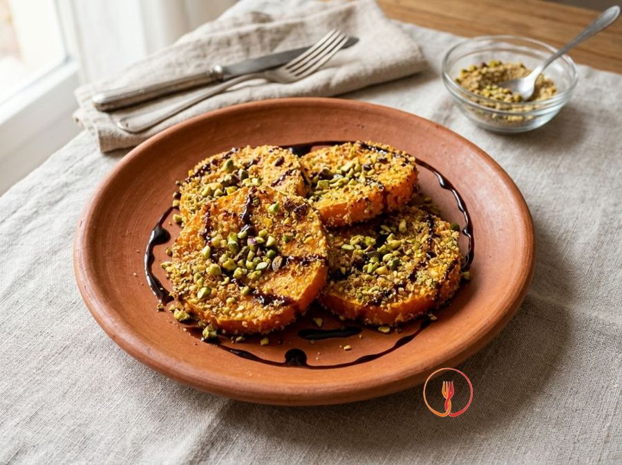

Medaglioni di zucca in crosta di pistacchi con riduzione al balsamico
Fette di zucca soda impanate e dorate in padella, servite con una nota agrodolce elegante.
Ingredienti
- Zucca Delica (tagliata a fette tonde spesse 1,5cm)8 fette
- Granella di pistacchi100gr
- Pangrattato50gr
- Uova medie2
- Farina 00q.b.
- Aceto balsamico di Modena100ml
- Miele di acacia1 cucchiaino
- Olio di semi di arachideper friggere
- Sale e pepeq.b.
Allergeni
Frutta a guscio, Glutine, Uova
Procedimento
- Pulite la zucca mantenendo la buccia (se edibile come nella Delica) e ricavatene 8 fette circolari spesse circa 1,5 cm.
- In un pentolino, unite l'aceto balsamico e il miele; fate ridurre a fuoco lento finché non diventa sciropposo.
- Preparate tre piatti: uno con la farina, uno con le uova sbattute con sale e pepe, e uno con il mix di pangrattato e granella di pistacchi.
- Passate ogni fetta di zucca prima nella farina, scrollando l'eccesso, poi nell'uovo e infine nel mix di pistacchi premendo bene.
- Scaldate l'olio di semi in una padella larga fino a raggiungere i 170°C.
- Friggete i medaglioni di zucca per circa 4-5 minuti per lato a fuoco medio-basso per garantire che l'interno cuocia senza bruciare la crosta.
- Scolate i medaglioni su carta assorbente e regolate di sale.
- Componete il piatto disponendo due medaglioni a porzione.
- Decorate con la riduzione di balsamico a filo e qualche pistacchio intero se avanzato.
Valori nutrizionali (stima)
| Per porzione (250 g) | Per 100 g | |
|---|---|---|
| Energia | 1745 kJ / 417 kcal | 699 kJ / 167 kcal |
| Proteine | 12 g | 5.0 g |
| Carboidrati | 41 g | 16 g |
| di cui zuccheri | 13 g | 5.4 g |
| Grassi | 24 g | 9.7 g |
| di cui saturi | 3.6 g | 1.4 g |
| Fibre | 8.9 g | 3.5 g |
| Sale | 0.6 g | 0.2 g |
Valori stimati con l'AI su dati medi CREA / USDA: sono indicativi e non sostituiscono il parere di un medico o di un nutrizionista.
Apri la ricetta nell'app per la lista della spesa, le schede ingredienti e i negozi vicini.